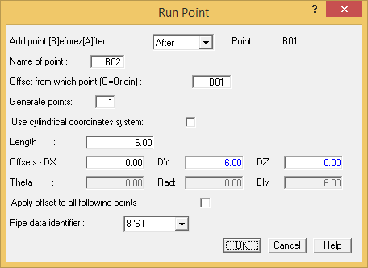
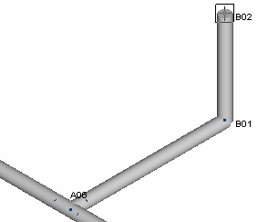
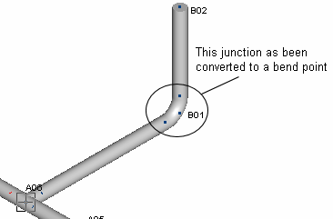

Select Insert > Piping Components > Run.

- Enter 6 {2000} in the DY-offset field and 0 in the DZ-offset field.
- Press OK to close the dialog. The model appears as shown in the following figure. Notice how the two pipe runs are connected at point B01. Obviously, a bend is required at this location.

- Select point B01 to make it active.
-
.jpg) Select Modify >
Convert Point to > Bend. An elbow is placed at the
junction between the two pipe runs as shown in the graphic
below.
Select Modify >
Convert Point to > Bend. An elbow is placed at the
junction between the two pipe runs as shown in the graphic
below.
